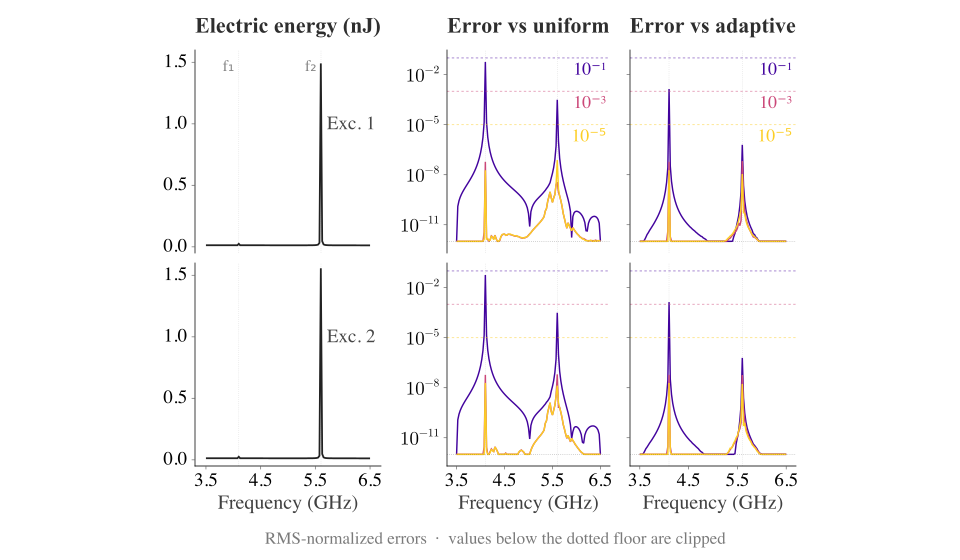
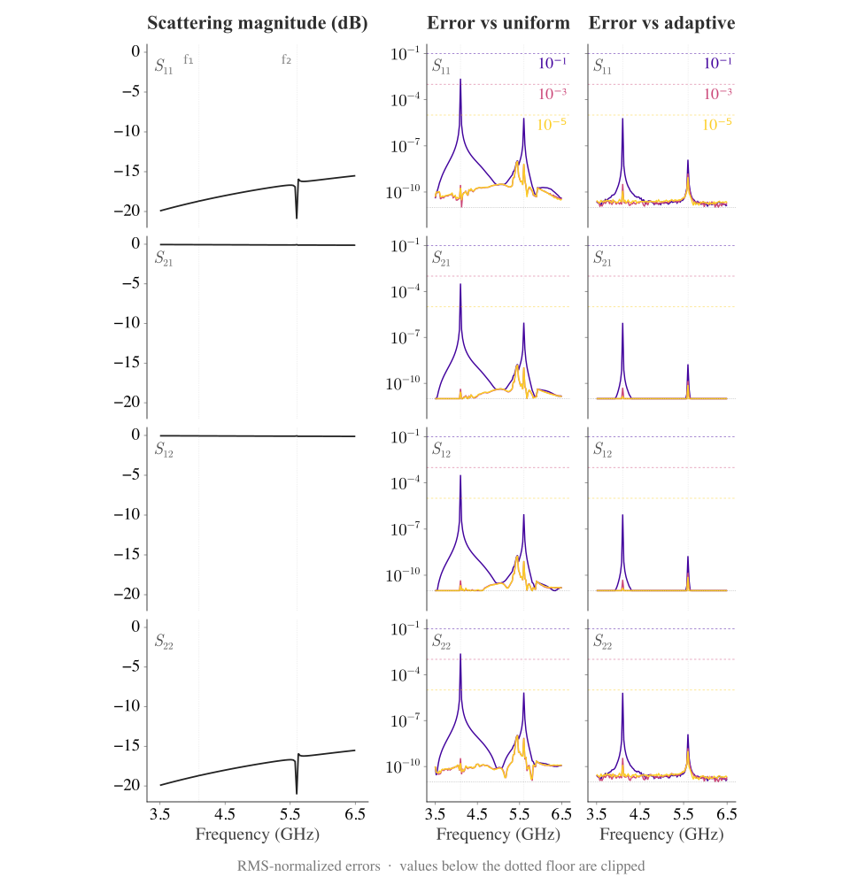

Circuit Synthesis from AC Simulations
In this tutorial we discuss Palace's circuit synthesis feature, which extracts a lumped-circuit model of a device directly from the full-wave FEM. The synthesis feature is based on the rational interpolation of the adaptive driven solver, which is discussed in Adaptive Frequency Sweeps for Driven Simulations. We assume familiarity with the details therein. We will continue to use the transmon model as our reference example; it also appears in the eigenmode and driven tutorials.
The synthesis feature prints out circuit matrices, whose detailed form depends on "internal" algorithmic choices of the adaptive driven solver and on Palace's conventions.
The internal algorithmic choices may change if better numerical algorithms become available. Furthermore, the interpretation of the output results requires some care to get right. Please proceed with caution.
Generate the tutorial data with examples/transmon/transmon_tutorial_circuit.jl and the figures with examples/transmon/transmon_tutorial_circuit_plots.jl.
There are a few cases where variables can cause naming confusion. Palace uses the notation $\bm{A}(\omega) = \bm{K} + i\omega \bm{C} - \omega^2 \bm{M}$ for the matrix at a given $\omega$. Here $\bm{C}$ is the loss matrix in the finite element space, which is not the same as the capacitance matrix. The $R$ matrix of $QR$ orthogonalization is not the circuit resistance matrix.
For this tutorial we will consistently label circuit matrices with a hat: the inverse inductance $\widehat{\bm{L}}^{-1}$, inverse resistance $\widehat{\bm{R}}^{-1}$, capacitance $\widehat{\bm{C}}$, etc. Similarly, we will label the voltage vector $\widehat{\bm{V}}$ and current $\widehat{\bm{I}}$. When referring to scalar quantities, like voltage $V$, we will drop the hat when there is no risk of confusion.
Circuit Synthesis Quick-Start
The circuit extraction requires using the adaptive driven solver ("AdaptiveTol" > 0) and setting the flag "AdaptiveCircuitSynthesis": true. A "Solver"/"Driven" configuration might look like:
"Driven": {
"Samples": [ {"Type": "Linear", "MinFreq": 3.0, "MaxFreq": 7.0, "FreqStep": 0.01} ],
"AdaptiveTol": 1e-5, // Use adaptive solver
"AdaptiveCircuitSynthesis": true // Enable synthesis
}Synthesis is opt-in since it alters the internal construction of the reduced-order model (ROM) of the adaptive solver. We will discuss this further below. Palace will proceed to perform the adaptive driven solver with the new ROM. At the end, it will print the standard measurement output of the driven solver as well as the following additional files:
rom-Linv-re.csv,rom-Rinv-re.csv,rom-C-re.csv. These are the real parts of the synthesized inverse inductance $\mathrm{Re}~\widehat{\bm{L}}^{-1}$, inverse resistance $\mathrm{Re}~\widehat{\bm{R}}^{-1}$, and capacitance $\mathrm{Re}~\widehat{\bm{C}}$ matrices. Each matrix is printed whenever its synthesized content is non-zero. $\mathrm{Re}~\widehat{\bm{R}}^{-1}$ is present whenever the system has any dissipative contribution — a resistive lumped port, anImpedance,Conductivity, orAbsorbingboundary, or the linear-in-$\omega$ term of a wave-port, surface-conductivity, or rational-impedance dispersion realization (together with any auxiliary-state damping). A wave-port-only system, with noLumpedPortat all, is permitted and can still produce a non-zero $\widehat{\bm{R}}^{-1}$. The CSV header describes the type of the node (port or synthesized). The matrices are in SI units.- (Optional):
rom-Linv-im.csv,rom-Rinv-im.csv,rom-C-im.csv. The imaginary component of the synthesized matrices $\mathrm{Im}~\widehat{\bm{L}}^{-1}$, $\mathrm{Im}~\widehat{\bm{R}}^{-1}$, $\mathrm{Im}~\widehat{\bm{C}}$. Each matrix is only printed when the Palace simulation contains a non-zero contribution to that matrix. A material loss tangent contributes to $\mathrm{Im}~\widehat{\bm{C}}$, but these imaginary parts can also arise from the dispersion fit of a frequency-dependent boundary condition: as described in Synthesizing Frequency-Dependent Boundary Conditions below, the constant term of the fit contributes to $\mathrm{Im}~\widehat{\bm{L}}^{-1}$ and its quadratic term to $\mathrm{Im}~\widehat{\bm{C}}$. These terms may seem unfamiliar, since in "textbook" circuits $\widehat{\bm{L}}$, $\widehat{\bm{R}}$, $\widehat{\bm{C}}$ are real. rom-orthogonalization-matrix-R.csv. The Gram–Schmidt $R$ factor of the synthesized circuit modes. This is very useful in advanced circuit postprocessing, but can be ignored by most users.rom-port-reference.csv. The matched reference admittance $Y_{\mathrm{ref}}$ and impedance $Z_{\mathrm{ref}} = Y_{\mathrm{ref}}^{-1}$ for every included port. It is written whenever at least one port is included. For a lumped port, $Y_{\mathrm{ref}} = 1/R_{\mathrm{ref}}$, where $R_{\mathrm{ref}}$ is the configuredRwhen it is non-zero and $Z_0$ otherwise. The full RLC load remains in the synthesized matrices androm-portload-*files. For a wave port, $Y_{\mathrm{ref}}$ comes from the fitted propagation constant $k_n(\omega)$ and may vary with frequency. The columns give frequency followed by the real and imaginary parts of $Y_{\mathrm{ref}}$ and $Z_{\mathrm{ref}}$ for each circuit port label.- (Optional, for cascading):
rom-portload-<label>-{Linv,Rinv,C}-{re,im}.csv. One set of files per included port, with the same node labels and dimensions as the totalrom-*matrices. The label isport_<idx>_re(lumped) orwaveport_<idx>_re(wave). Each set isolates that single port's terminal-load contribution — the $R$/$L$/$C$ termination of a lumped port, or the dispersion contribution (including any auxiliary states) of a wave port. Downstream cascade tools subtract a selected internal port's load from the total matrices to obtain the bare device, then add back only the external loads after connecting ports. Only the non-zero parts are written. - (When synthesized eigenvalue estimates are found):
rom-eigenvalues.csv,rom-eigenvectors-re.csv, androm-eigenvectors-im.csv. These contain estimates of the synthesized system's eigenfrequencies, quality factors, and HDM errors, together with the real and imaginary parts of the corresponding eigenvectors in the synthesized node space.
There are several constraints and considerations for using this feature:
- The synthesis does not require a purely quadratic frequency dependence. Frequency-dependent boundary conditions —
WavePort,Conductivity(surface conductivity),RationalImpedance, and second-orderAbsorbing(farfield) — are supported. Palace represents each such boundary's frequency dependence in the synthesized matrices, as described in Synthesizing Frequency-Dependent Boundary Conditions below. The fit accuracy is governed by"AdaptiveTol"; Palace prints the per-boundary fit residual and warns if it cannot be met. - All
LumpedPortattributes must be orthogonal to each other, since these are separated out as individual rows and columns in the circuit matrix. For Palace's Nédélec meshes, this means that lumped ports cannot share parallel edges, since the degree of freedom on the edge contributes to both ports. - A port can be removed from the synthesized circuit matrices with the per-port
"IncludeInSynthesis"flag (defaulttrue), available on bothLumpedPortandWavePort. Setting it tofalsekeeps the boundary condition physically enforced but omits that port's row and column from the synthesized matrices — useful for passive terminations you do not need to measure or cascade. Excited ports must keep"IncludeInSynthesis": true; Palace reports an error otherwise, because the excitation vector is always added to the synthesis basis. - The
"AdaptiveCircuitSynthesisDomainOrthogonalization"option controls how the non-port basis vectors are orthogonalized and therefore determines the voltage normalization of synthesized nodes. In general, a user should not need to switch from the default value of"Energy". "AdaptiveCircuitSynthesis": truerequires"AdaptiveTol" > 0and at least oneLumpedPortorWavePort; Palace reports an error otherwise.FloquetPortboundaries are not yet supported with circuit synthesis. Their frequency-dependent Robin contribution is included in the adaptive sweep but not in the synthesized circuit pencil.- All the guidance and caveats on using the adaptive solver discussed in Adaptive Frequency Sweeps for Driven Simulations still apply.
Circuit Theory and Conventions
The general question of "What exactly is a circuit?" and how to connect Maxwell's equations to a circuit representation is covered in many electrical engineering textbooks. In particular, there are subtleties and choices of convention in defining circuits when going from DC (electro- and magnetostatic) to AC simulations. We will discuss our approach below, but refer to references [1-5] for in-depth discussions.
The circuit synthesis of Palace is currently based on the adaptive driven solver — see the driven solver tutorial — so is AC only. The result will be an effective (synthesized) circuit that will only accurately reproduce the response in the frequency interval on which it was trained.
Projective Construction
Let us recall the basics of the ROM construction. The linear equation that Palace solves when evaluating a driven simulation is
\[\left[\bm{K} + i\omega \bm{C} - \omega^2 \bm{M} + \bm{A}_2(\omega)\right] \bm{x} = i \omega \bm{b} + \bm{b}_2(\omega),\]
where $\bm{K}$, $\bm{C}$, and $\bm{M}$ give the purely quadratic part of the system matrix, and $\bm{A}_2(\omega)$ and $\bm{b}_2(\omega)$ collect the terms that are non-quadratic in $\omega$, arising from frequency-dependent boundary conditions (wave ports, second-order farfield absorbing, surface conductivity, and rational surface impedance). Palace synthesizes these $\bm{A}_2(\omega)$ contributions by fitting their dispersion — see Synthesizing Frequency-Dependent Boundary Conditions below — so that the quadratic part of each fit maps onto $\bm{K}$/$\bm{C}$/$\bm{M}$ and any residual is realized as auxiliary states. For the remainder of this section we assume a purely quadratic system ($\bm{A}_2 = \bm{b}_2 = 0$) for clarity. The adaptive solver creates a ROM by projecting this large system onto a set of orthogonal vectors $\bm{Q}$. This forms projected matrices $\bm{K}_r = \bm{Q}^T\bm{K}\bm{Q}$, $\bm{C}_r = \bm{Q}^T\bm{C}\bm{Q}$, $\bm{M}_r = \bm{Q}^T\bm{M}\bm{Q}$, and projected vector $\bm{b}_r = \bm{Q}^T\bm{b}$. The projection onto a smaller basis accurately reproduces the response of the system in the user-specified frequency interval $[f_{\mathrm{min}}, f_{\mathrm{max}}]$.
The linear equation $[\bm{A}_r(\omega) / i \omega] \bm{x}_r = \bm{b}_r$, looks like a circuit admittance equation $\widehat{\bm{Y}}(\omega)\widehat{\bm{V}} = \widehat{\bm{I}}$, suggesting that we can just identify $\bm{K}_r$ with the inverse inductance $\widehat{\bm{L}}^{-1}$, $\bm{C}_r$ with the inverse resistance $\widehat{\bm{R}}^{-1}$, and $\bm{M}_r$ with the capacitance $\widehat{\bm{C}}$. We could have said the exact same thing about the non-projected system.
This identification is “morally speaking” correct [1-5]. The matrix $\bm{K}$ arises from discretizing the magnetic energy term $\tfrac{1}{2}\int dV\, (\nabla\times\bm{E}^*)\mu^{-1}(\nabla\times\bm{E})/{\omega^2}$, which we identify as $\tfrac{1}{2}\widehat{\bm{I}}^{*} \widehat{\bm{L}}^{-1} \widehat{\bm{I}}$ in a circuit. The matrix $\bm{M}$ comes from discretizing the electric energy $\tfrac{1}{2}\int dV \, \bm{E}^* \varepsilon \bm{E}$, which we identify as $\tfrac{1}{2}\widehat{\bm{V}}^{*} \widehat{\bm{C}} \widehat{\bm{V}}$. The matrix $\bm{C}$ arises from discretizing the Rayleigh dissipation term.
However, just printing $\bm{K}_r$, $\bm{C}_r$, and $\bm{M}_r$ matrices is neither a precise nor a useful circuit identification, for two related reasons:
- The basis $\bm{Q}$ used to construct these matrices has lost the notion of system ports. There is no way to calculate the scattering matrix of this circuit or to cascade it with other circuits.
- The $\bm{K}_r$, $\bm{C}_r$, $\bm{M}_r$ matrices have no consistent definition of voltage $V$ and current $I$. This is certainly true because these matrices are interpolation coefficients of a finite element basis that discretizes Maxwell's equations. For example, if you change the polynomial
Orderof the FEM basis, the basis changes, as do the matrix entries. Even without the finite element interpolation, however, $V$ and $I$ at AC are only generically defined by convention at ports [1,3-5]. There is no a priori notion of $V$ and $I$ for 3D electric field solutions $\bm{x}$ that make up $\bm{Q}$.
In order to make the connection to circuits, we will change both the content of the basis $\bm{Q}$ and its orthogonalization rule. Thus, running Palace with "AdaptiveCircuitSynthesis" set to true or false produces different ROMs.
Adding Ports to the ROM Basis
The circuit-synthesis ROM adds the port modes as the first $N_p$ columns of the basis matrix $\bm{Q}$. Here $N_p$ counts real port basis vectors, not physical ports: each included lumped port contributes one, while each included wave port contributes one or two. Before orthogonalization, the vectors added to the ROM basis look like:
\[\bm{W} = \big[ \underbrace{\bm{e}_1 \;\; \cdots \;\; \bm{e}_{N_l}}_{\text{lumped ports}} \;\; \underbrace{\mathrm{Re}\,\bm{w}_1 \;\; \mathrm{Im}\,\bm{w}_1 \;\; \cdots}_{\text{wave ports}} \;\; \underbrace{\mathrm{Re}\,\bm{x}(\omega^*_1) \;\; \mathrm{Im}\,\bm{x}(\omega^*_1) \;\; \cdots}_{\text{synthesized interior nodes}}\big].\]
Here $\bm{e}_j$ are the lumped port mode fields, $\bm{w}_p$ are the wave-port modal fields, and $\bm{x}(\omega^*_k)$ are high-dimensional model (HDM) solutions at the sample frequencies. Lumped ports come first, followed by wave ports. Each wave-port mode $\bm{w}_p$ is evaluated at the center of the sweep band and can contribute both a real and an imaginary basis vector. The power-orthogonalization described below extends to the wave-port boundaries. Because the ports are added first, the top-left $N_p \times N_p$ block is the port block. For a complex wave port, the _re and _im rows are two coordinates of the same physical terminal. The adaptive solver then appends HDM samples and orthogonalizes them against these port modes.
The synthesized matrix, orthogonalization, port-load, and eigenvector CSV files list the node names in the order they appear in $\bm{Q}$. The included ports appear first. Lumped ports come first as port_<idx>_re, where <idx> is the "Index" in the "LumpedPort" configuration; lumped ports are always real fields, so each occupies a single column with the _re suffix. Wave ports follow as waveport_<idx>_re and, when the wave-port modal field has a non-zero imaginary part, an additional waveport_<idx>_im column — so a wave port may occupy two columns, unlike a lumped port. Next come the synthesized interior nodes from the HDM samples (sample_e* below). Finally, when a frequency-dependent boundary enters the Augmented regime, the matrices grow by auxiliary-state rows and columns appended at the end, labeled <prefix>_p<k>d<j>, where <prefix> is waveport_<idx>, farfield, surfsigma_<g>, or rationalz_<b>, k is the rational-fit pole index, and j is the kept singular-direction index. These auxiliary states are internal realization nodes for the rational dispersion fit, not physical ports. The matrix dimension is therefore the number of basis nodes plus the number of auxiliary states.
Orthogonalization
The vectors in $\bm{W}$ above are coefficients in the finite element basis that discretize Maxwell's equations. To interpret them as sensible microwave circuits, where the leading $N_p \times N_p$ block recovers the port behavior, we have to proceed carefully when defining how to orthogonalize these fields.
Lumped port boundary
Palace's implementation of lumped ports, voltage convention choices, and definition of the scattering matrix are all defined in the Reference Documentation. We assume familiarity with that section. Here we will also assume that ports are made of a single element $e$, although all formulas generalize.
On a lumped port $\Gamma_j$, Palace uses the weighted overlap
\[\langle \bm{E}_1, \bm{e}_j \rangle_{\Gamma_j} = \sum_e \frac{L_e}{N_j W_e} \int_{\Gamma_{j,e}} dS\, \bm{E}_1 \cdot \bm{e}_j^* ,\]
where $N_j$ is the number of parallel elements in the port. This frequency-independent reference weighting enforces power orthogonality; the physical termination $Z_s(\omega)$ is not used here. Setting $\bm{E}_1 = \bm{e}_j$ fixes the port-mode normalization: Palace scales $\bm{e}_j$ so that $\int_{\Gamma_j} |\bm{e}_j|^2 \, dS = |Z_R| \sum_e W_e / L_e$, summed over the port's lumped elements with widths $W_e$ and lengths $L_e$. For a single rectangular element this corresponds to a port voltage $V_j = \sqrt{|Z_R|}$, i.e. a mode carrying unit power referenced to $Z_R$.
The reference discusses the relationship between physical surface impedance on a port $Z_s$ and the circuit characteristic impedance $Z$. For ports that are not purely resistive (such as junctions or lossy waveguide ports), it is generally more helpful to normalize the port field with respect to a different reference impedance $Z_R$ which is purely resistive. For the port mode added to the basis $\bm{W}$, this is essential for a frequency-independent voltage normalization, and we pick the impedance of free space $Z_R = Z_0 \approx 376.73~\mathrm{\Omega}$. However, this will also mean that we will have to post-process the Palace synthesized circuit matrices carefully to recover the values (voltage, current, scattering parameters) with respect to the conventional circuit characteristic impedance $Z$.
Wave port boundary
Wave ports are orthogonalized with the same power-flow inner product as lumped ports: each wave-port boundary contributes a boundary-mass term to the shared hybrid weight matrix, so wave-port modes are made power-orthogonal to one another and to the bulk in exactly the same sense as above. Two practical differences are worth noting.
First, the mode itself is not a prescribed analytic field. The wave-port modal field $\bm{w}_p$ is the solution of the two-dimensional cross-section eigenproblem on the port boundary, evaluated at a reference frequency taken as the center of the sweep band. This field is generally complex, so — unlike a lumped port — it contributes up to two columns to the basis (its real and imaginary parts, each retained only if it survives the orthogonalization tolerance).
Second, the unit-power normalization is imposed slightly differently. The cross-section eigensolve already normalizes $\bm{w}_p$ to carry unit power ($|\bm{E}\times\bm{H}^*|$ integrated over the port), so the wave-port boundary enters the weight matrix with a flat weight at the same nominal reference impedance $Z_R$. The end state is the same — each included port mode carries unit power referenced to $Z_R$ — but for wave ports the normalization comes from the eigenproblem rather than from a geometric factor.
Note that this orthogonalization fixes the wave-port mode shape at the single reference frequency. The frequency dependence of the port — the propagation constant $k_n(\omega)$ and hence the port admittance — is handled separately by the dispersion fit described in Synthesizing Frequency-Dependent Boundary Conditions, not by this normalization step.
Bulk Volume
After we have enforced the port orthogonalization rule above, we need a rule for bulk degrees of freedom. Since these will only contribute to effective synthesized nodes, we do not necessarily need to pick a physical normalization choice — i.e. there is no "natural" voltage choice for a generic AC mode shape in 3D. Different orthogonalization choices correspond to rotations or scaling in the synthesized space, which cancel out once we calculate physical quantities like energy, port scattering parameters, or eigenmode frequencies.
By default, Palace normalizes the field according to the system mass matrix $\bm{M}$. For two bulk modes this corresponds to an orthogonalization according to the inner product
\[\langle \bm{E}_1, \bm{E}_2 \rangle_\Omega = \int_\Omega dV \bm{E}_1 \varepsilon \bm{E}_2,\]
which is the electric domain energy, up to a factor of 2. An appealing aspect of this inner product is that it corresponds to a sensible physical quantity and converges to stable values with changing finite element order or mesh refinement. We refer to this orthogonalization rule as "Energy".
Palace allows the user to change the orthogonalization rule with the flag "AdaptiveCircuitSynthesisDomainOrthogonalization", although most users should not need this.
Synthesizing Frequency-Dependent Boundary Conditions
The discussion so far assumed a purely quadratic $\bm{A}(\omega) = \bm{K} + i\omega\bm{C} - \omega^2\bm{M}$. Several boundary conditions break this assumption: they add a term $f(\omega)\, \bm{M}_b$ to the system matrix, where $\bm{M}_b$ is an $\omega$-independent boundary-mass operator and $f(\omega)$ is a scalar dispersion that may not be quadratic in $\omega$. The dispersion differs per boundary type:
- Wave port. The boundary term is $i\,k_n(\omega)\,\bm{M}_b$, where $k_n(\omega)$ is the modal propagation constant; the port admittance is $Y_p(\omega) = k_n(\omega) / (\omega\mu)$. The fitted scalar is $k_n(\omega)$, obtained by re-solving the small cross-section eigenproblem at a set of fit frequencies. For the synthesis (and the underlying driven sweep) only the real, propagating part of $k_n$ is used; the imaginary part (line attenuation) is dropped, so a wave port contributes to $\widehat{\bm{R}}^{-1}$ through the dispersion of $k_n$, not through attenuation.
- Second-order absorbing (farfield) boundary. Here $f(\omega) = 0.5/\omega$, which is exactly a single pole at $\omega = 0$ with residue $0.5$. This is injected analytically — no fit is needed.
- Surface conductivity. The boundary term is $(i\omega / Z(\omega))\,\bm{M}_b$ with the skin-depth surface impedance $Z(\omega)$ (and an optional finite-thickness correction). The leading $i$ is carried by the (purely imaginary) projected boundary mass, so the scalar that is actually fit is $f(\omega) = \omega / Z(\omega)$, in general complex.
- Rational surface impedance. For an impedance $Z(s) = N(s)/D(s)$, the Robin coefficient is $g(s) = sD(s)/N(s)$. Palace separates $g(i\omega)/i$ by exact long division. When the polynomial quotient has degree at most two, it is folded exactly into the circuit pencil and the strictly proper remainder is sent directly to AAA. Higher-degree inputs use the generic quadratic-plus-AAA fallback described below.
For wave ports and surface conductivity, Palace fits $f(\omega)$ on the sweep band and compares a quadratic fit against "AdaptiveTol":
Polynomial regime. If $f(\omega) \approx \alpha_0 + \alpha_1\omega + \alpha_2\omega^2$ meets the tolerance, no rows or columns are added. With $\bm{M}_b^r = i\,\bm{M}_{\mathrm{proj}}$, real coefficients, as in the wave-port fit, map as
\[\alpha_0 \;\to\; \mathrm{Im}~\widehat{\bm{L}}^{-1}, \qquad \alpha_1 \;\to\; \mathrm{Re}~\widehat{\bm{R}}^{-1}, \qquad -\alpha_2 \;\to\; \mathrm{Im}~\widehat{\bm{C}} .\]
Surface-conductivity and rational-impedance fits can have complex coefficients. In that case, their real and imaginary parts contribute to both components of the corresponding circuit matrices.
Augmented regime. When the generic quadratic residual exceeds "AdaptiveTol", Palace fits the leftover residual with an AAA rational approximation [7],
\[f(\omega) - \big(\alpha_0 + \alpha_1\omega + \alpha_2\omega^2\big) \;\approx\; q(\omega) + \sum_{k} \frac{r_k}{\omega - p_k} ,\]
where polynomial quotient terms in $q$ through quadratic order are folded back into the $\alpha_j$. The rational-impedance exact-split path uses the same auxiliary construction but obtains its poles directly from the strictly proper remainder. Each pole becomes a small set of auxiliary states appended to the synthesized matrices. Writing the projected boundary mass as a rank factorization $\bm{M}_{\mathrm{proj}} = \sum_j \sigma_{j}\, \bm{u}_{j}\bm{u}_{j}^{\top}$ (a truncated SVD, keeping the directions $j$ with significant singular value $\sigma_{j}$), each pair of pole $k$ and kept direction $j$ adds one auxiliary node. For that node the augmented pencil is populated as
\[\widehat{\bm{K}}_{\mathrm{aux},\mathrm{aux}} = -p_k, \qquad \widehat{\bm{C}}_{\mathrm{aux},\mathrm{aux}} = -i, \qquad \widehat{\bm{K}}_{\mathrm{node},\mathrm{aux}} = \widehat{\bm{K}}_{\mathrm{aux},\mathrm{node}}^{\top} = \sqrt{-i\,r_k\,\sigma_{j}}\;\bm{u}_{j} ,\]
where both couplings are the same unconjugated vector, so the augmented pencil stays complex-symmetric rather than Hermitian. Eliminating the auxiliary node by Schur complement contributes $-\widehat{\bm{K}}_{\mathrm{node},\mathrm{aux}} \big(\widehat{\bm{K}}_{\mathrm{aux},\mathrm{aux}} + i\omega\, \widehat{\bm{C}}_{\mathrm{aux},\mathrm{aux}}\big)^{-1} \widehat{\bm{K}}_{\mathrm{aux},\mathrm{node}} = i\,\dfrac{r_k\,\sigma_{j}\, \bm{u}_{j}\bm{u}_{j}^{\top}}{\,\omega - p_k\,}$ to the node block, and summing over the kept directions $j$ recovers the rational term $i\,r_k/(\omega - p_k)\,\bm{M}_{\mathrm{proj}} = r_k/(\omega - p_k)\,\bm{M}_b^r$ exactly. These nodes carry the <prefix>_p<k>d<j> labels described above, and the orthogonalization-$R$ matrix is identity-padded over them. The net effect is that the synthesized $\widehat{\bm{L}}^{-1}$, $\widehat{\bm{R}}^{-1}$, $\widehat{\bm{C}}$ stay quadratic in $\omega$ while still reproducing the true non-quadratic dispersion.
The only fit-accuracy knob is "AdaptiveTol". It sets the regime threshold and the target accuracy of AAA. The maximum number of poles and the SVD rank cutoff are internal. Palace prints fit residuals so users can check the accuracy of the synthesized matrices.
Running the Transmon Model with Circuit Synthesis
We continue with the transmon model from the eigenmode and driven solver tutorials. We enable circuit synthesis with the "AdaptiveCircuitSynthesis": true flag:
{
"Problem" : {
"Verbose": 2,
"Output" : "postpro/transmon_tutorial_driven_rom/driven_adaptive_1e-1",
"Type" : "Driven"
},
"Boundaries": {
"LumpedPort": [
{ "Attributes": [6], "Index": 1, "Direction": "+X", "Excitation": 1, "R": 50 },
{ "Attributes": [7], "Index": 2, "Direction": "-X", "Excitation": 2, "R": 50 },
{ "Attributes": [4], "Index": 3, "Direction": "+Y", "C": 5.5e-15, "L": 1.486e-8 }
],
"PEC" : { "Attributes": [5] },
"Absorbing" : { "Order": 1, "Attributes": [3] }
},
"Model" : { "Refinement": {"MaxIts": 0}, "Mesh": "mesh/transmon.msh2", "L0": 1.0e-6 },
"Domains" : {
"Postprocessing": { "Energy": [ { "Attributes": [1], "Index": 1 } ] },
"Materials" : [
{ "Permittivity": 1.0, "Attributes": [2], "Permeability": 1.0 },
{
"LossTan" : [ 3.0e-5, 3.0e-5, 8.6e-5 ],
"Permittivity": [ 9.3, 9.3, 11.5 ],
"Attributes" : [ 1 ],
"Permeability": [ 0.99999975, 0.99999975, 0.99999979 ],
"MaterialAxes": [ [0.8, 0.6, 0.0], [-0.6, 0.8, 0.0], [0.0, 0.0, 1.0] ]
}
]
},
"Solver" : {
"Driven": {
"Samples" : [ {"Type": "Linear", "MinFreq": 3.5, "MaxFreq": 6.5, "FreqStep": 0.025} ],
"AdaptiveTol": 1e-1,
"AdaptiveCircuitSynthesis": true
},
"Order" : 2,
"Linear": {"Type": "Default", "Tol": 1.0e-12, "MaxIts": 1000}
}
}In addition to the standard output (port-S.csv, domain-E.csv, etc.), Palace writes the circuit files listed in the quick-start section, above.
Let us look at the difference in the standard output domain-E.csv between the simulations with "AdaptiveCircuitSynthesis": true and "AdaptiveCircuitSynthesis": false.

The left column above shows the domain electric energy $E_\mathrm{elec}$ from the uniform driven solver, which we use as our reference baseline. This is exactly the same data shown previously in the driven solver tutorial. The middle column shows the RMS normalized absolute error between the electric energy calculated via the adaptive solver with circuit synthesis turned on and the uniform reference. The meaning of this plot was described previously. The dashed lines indicate the adaptive tolerance "AdaptiveTol"; however, these are not bounds on the error of the domain energy. As discussed in the driven solver tutorial, the adaptive tolerance controls the error in the electric field coefficients and not the error in a derived quantity such as energy, so the dashed line is only a rough order-of-magnitude heuristic.
The right column shows the RMS scaled absolute error between $E_\mathrm{elec}$ calculated through the adaptive driven solver with circuit synthesis turned on $E_\mathrm{circuit}$ and turned off $E_\mathrm{adaptive}$. It is substantially smaller than the error relative to the uniform reference data in the middle column, but still larger than solver precision. The choice of HDM frequency samples is the same for both — e.g. at AdaptiveTol of 1e-1 the combined pivot frequencies from both excitations are $\{3.5, 5.02, 5.899, 5.9, 6.5\}~\mathrm{GHz}$. How can we understand the discrepancy?
As discussed in the theory section above, during circuit synthesis Palace builds a different ROM by (a) adding extra port modes to the basis $\bm{Q}$, so it spans a larger space and (b) using a different orthogonalization weight, so the basis of this larger space is different. Adding port modes will change the condition number $\kappa[A_r(\omega)]$ of the ROM system matrix. We already know that linear solves will have a worse conditioning close to the poles and errors will spike. We can estimate this error with matrix stability analysis [6], but that is beyond the scope of this tutorial. Furthermore, the different orthogonalization routine used with synthesis adds many more floating-point operations when calculating the basis $\bm{Q}$. However, we expect the additional error from these operations to be mostly frequency-independent and contribute to the noise floor on the plots above.
For completeness, we show the analogous plot for the scattering parameters from port-S.csv. This plot has a similar interpretation to the domain-E.csv plot above.

Let us now look at the rom-*.csv output. For this model, five matrix files describe the $19 \times 19$ synthesized circuit pencil and its orthogonalization: rom-Linv-re.csv, rom-Rinv-re.csv, rom-C-re.csv, rom-C-im.csv, and rom-orthogonalization-matrix-R.csv. Palace also writes the port-reference table, the non-zero per-port load matrices, and, when estimates are found, the synthesized-system eigenvalue and eigenvector files described above. The headers of the circuit matrix files describe the origin of the nodes (shortened for brevity):
port_1_re,
port_2_re,
port_3_re,
sample_e1_s0_re,
sample_e1_s0_im,
sample_e1_s1_re,
sample_e1_s1_im,
# ...
sample_e2_s0_re,
sample_e2_s0_im,
# ...
sample_e2_s3_re,
sample_e2_s3_imThe first three columns correspond to the port modes, which are all real because this model uses only lumped ports. (A model with wave ports would have additional waveport_<idx>_re, and possibly waveport_<idx>_im, columns following the lumped-port columns.) The remaining columns correspond to synthesized nodes coming from samples during the adaptive solve. The label e1 / e2 corresponds to the excitation and s0, s1, ... are the sample indices within each excitation. As we tighten the "AdaptiveTol" of the driven solver that gave rise to this model, the number of samples increases and so does the size of the synthesized matrices.
Let us look at the first 5 rows and columns of rom-Rinv-re.csv:
port_1_re, port_2_re, port_3_re, sample_e1_s0_re, sample_e1_s0_im, ...
2.000e-02, 0.000e+00, 0.000e+00, -1.799e-23, -2.878e-22,
0.000e+00, 2.000e-02, 0.000e+00, 1.799e-23, 2.878e-22,
0.000e+00, 0.000e+00, 0.000e+00, 0.000e+00, 0.000e+00,
-1.799e-23, 1.799e-23, 0.000e+00, 6.091e-10, 1.320e-08,
-2.878e-22, 2.878e-22, 0.000e+00, 1.320e-08, 3.293e-07,
...The diagonal elements of port_1 and port_2 are the expected $1 / (50~\Omega)$ port values. The full row and column of port_3 are zero, since it is pure $L$, $C$. The other rows and columns correspond to the orthogonalized basis of samples. For the first sample shown above, we can think of this as the driven solve with the lumped port modes removed. Why does each HDM sample have a small diagonal dissipation? First, the model above has a first-order Absorbing boundary condition, which means there is dissipation beyond what happens at the resistive ports. (A second-order Absorbing boundary is now also synthesizable; its frequency-dependent $0.5/\omega$ term is injected exactly as a single pole at $\omega = 0$, realized by auxiliary states — see Synthesizing Frequency-Dependent Boundary Conditions.) Second, the electric field of a HDM sample at a given frequency $\omega$ may have a different shape at a lumped port than the port mode (i.e., mode shape is not enforced at port). This means that the HDM could pick up more or less than the full $1 / (50~\Omega)$ dissipative term.
Now consider rom-C-re.csv:
port_1_re, port_2_re, port_3_re, sample_e1_s0_re, sample_e1_s0_im, ...
4.689e-16, 0.000e+00, 0.000e+00, -5.844e-17, -9.542e-17,
0.000e+00, 4.282e-16, 0.000e+00, -4.632e-17, 8.473e-17,
0.000e+00, 0.000e+00, 5.529e-15, -6.781e-22, -2.415e-20,
-5.844e-17,-4.632e-17, -6.781e-22, 3.542e-14, -2.962e-20,
-9.542e-17, 8.473e-17, -2.415e-20, -2.962e-20, 3.542e-14,
...The diagonal value of port 3 is 5.529e-15, which is larger than the 5.5e-15 term we added to C in the LumpedPort configuration. Additionally, ports 1 and 2 have small diagonal contributions. In all these cases, this is because the boundary port term will still pick up some of the capacitive contribution from the volume term of the mesh elements neighboring the port surface. If we were to refine the mesh elements close to the port, the size of this term would decrease.
Finally, Palace outputs a rom-C-im.csv for this model. This is because of the presence of the "LossTan" in our model configuration (see theory reference).
Literature & References
[1] R. B. Adler, L. J. Chu, and R. M. Fano, Electromagnetic energy transmission and radiation, 5. print. in The MIT Press classics. Cambridge, Mass.: M.I.T. Press, 1969.
[2] J.-M. Jin, The finite element method in electromagnetics, 3. ed. Piscataway, NJ: IEEE Press, 2014.
[3] R. B. Marks and D. F. Williams, "A general waveguide circuit theory," J. Res. Natl. Inst. Stan., vol. 97, no. 5, p. 533, Sep. 1992, doi: 10.6028/jres.097.024.
[4] D. M. Pozar, Microwave engineering, Fourth edition. Hoboken, NJ: John Wiley & Sons, Inc, 2012.
[5] G. Wendt et al., Elektrische Felder und Wellen / Electric Fields and Waves, vol. 4 / 16. in Handbuch der Physik / Encyclopedia of Physics, vol. 4 / 16. Berlin, Heidelberg: Springer Berlin Heidelberg, 1958. doi: 10.1007/978-3-642-45895-8.
[6] N. J. Higham, Accuracy and stability of numerical algorithms, 2nd ed. in Other titles in applied mathematics, no. 80. Philadelphia, Pa: Society for Industrial and Applied Mathematics (SIAM, 3600 Market Street, Floor 6, Philadelphia, PA 19104), 2002. doi: 10.1137/1.9780898718027.
[7] Y. Nakatsukasa, O. Sète, and L. N. Trefethen, "The AAA algorithm for rational approximation," SIAM J. Sci. Comput., vol. 40, no. 3, pp. A1494–A1522, 2018. doi: 10.1137/16M1106122.